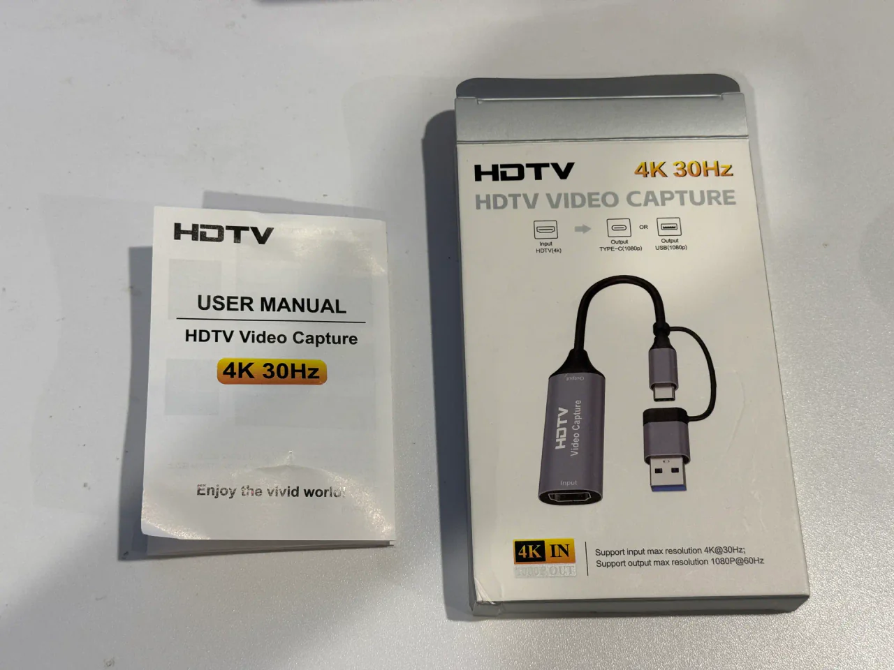

~2.1k
lines of assembly
One source file
Menu, chrome, games, helpers — regression-tested with the core.

Tomato OS
Tomato OS boots on the FPGA computer, draws the wallpapered desktop, reads the controls, and runs games — including Sudoku. I wrote it in Tomato’s own assembly language. These captures are the HDMI stream, not a phone pointed at a monitor.
Verification proves the ALU. Tomato OS proves the rest of the machine — keypad MMIO, tile RAM, HDMI timing, menu loop — on hardware someone can watch. It is the stress test for pseudos, string layout, and the register file at scale (32,768 GPR backed by 15-bit SRAM). The CPU writes an 80×60 character field over a bitmap wallpaper; a separate scanout block reads it and drives the monitor. No GPU — games are loops in asm.


Five Nexys buttons wired as a D-pad through rtl/board/keypad.v. Center (N17) is Enter. One physical press emits one key event — after fixing a bench that counted hundreds of repeats from a single push (dispatch). In Sudoku, Enter cycles the digit 1…9 then blank.
| Button | Keycode | In the shell |
|---|---|---|
| Up / Down | 0x1E / 0x1F | Move menu highlight |
| Center | 0x0D | Select · Enter screen · cycle digits in Sudoku |
| Left | 0x11 | Back to menu |
| Left / Right | 0x11 / 0x10 | Steer in Snake, Tetris, and Racer |
Keyboard MMIO lives at 0x780000: word 0 is the keycode (reading consumes it), word 1 is the ready flag. The Nexys 7-segment display follows the last nonzero writeback or store — so it is not stuck at zero while the shell waits for a key.
Boot splash runs once. Then Desktop v1.2: applications on the left, preview and credits on the right. Twelve entries — each dispatches through a jump table, so adding a screen is one row in the table.
| Entry | What it does |
|---|---|
| System info | What is Tomato — quirks table |
| Palette | 16-color swatch chart for the tile attribute field |
| Font chart | CP437-ish glyph grid — every drawable character |
| Keypad test | Live keycodes on screen — bench tool for the D-pad |
| Fibonacci | Running integers; 7-seg tracks the result |
| Snake | Tile paint, timing, keypad input |
| Tetris | Board in low RAM · piece rotation · line clears |
| About Tomato | Credits, Penn Engineering |
| Memory map | Bus windows the CPU can name |
| Sudoku | Arrows move · Enter cycles 1–9 · gold clues fixed |
| ALU Studio | MASKADD / XORAND vs reference sequences |
| Racer | Steer through traffic |
Framebuffer window at 0x300000 — 80×60 cells, each an 8×8 pixel tile, composited over the Ghana wallpaper ROM. One word per cell (videoout.v):
Attributes with a black background fit in one ADDI — any tile with bg = 0 is 0x0FFF < 4096. Splash art (Ghana flag) sits at 0x1200 as a pre-baked 80×60 tile map from tools/img2tomato.py (tiles README).
Everything an LA reaches must sit under 4096 — it assembles to ADDI rd, r0, addr. Prose and pointer tables above that line use .word label instead.
| Region | Address | Use |
|---|---|---|
| Code | 0x0000 | Program and helpers |
| Strings | 0x0640 | Menus, tables, jump targets |
| Tunables | 0x0F00 | Bench pokes game speeds before reset |
| Scratch | 0x0F08 | Mutable OS state |
| Tetris board | 0x0F20 | One 10-bit row mask per word |
| Snake body | 0x0F40 | 128 packed cells |
| Tile art | 0x1200 | Ghana flag map (4800 words) |
| Framebuffer | 0x300000 | 80×60 tile RAM |
| Keypad | 0x780000 | MMIO data + ready |
Without hardware, print the framebuffer in simulation: make -C hardware/fpga/core os. Regression: make -C hardware/fpga/core test boots the OS image and checks menu + games.
Tomato OS and microcode are baked into the bitstream as literal Verilog — not loaded from SD card at runtime. After editing the asm, re-burn before synthesising.
On HDMI


~2.1k
lines of assembly
Menu, chrome, games, helpers — regression-tested with the core.
80×60
text field
Tile RAM at 0x300000. Scanout is separate silicon.
9
menu entries
Indexed dispatch — new screen is one table row.